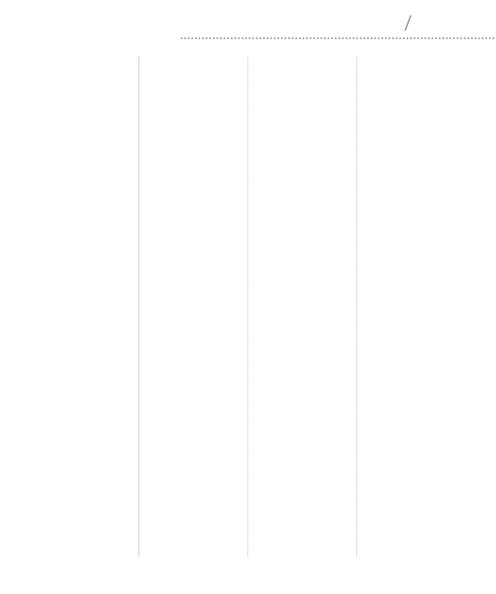

Trang 218 Chỉ dẫn
axons (sợi trục) 20, 21, 22–23, 26–27, 86, 98–99, 136
amusia 215 amygdala (hạch hạnh nhân) 32, 33, 38, 39, 48, 59, 108, 213 and emotions (cảm xúc) 107, 110, 111, 134 and senses (giác quan) 77, 78 babies (trẻ sơ sinh) brain (não bộ) development (phát triển) 44–45 analytical thinking (suy nghĩ) 152 language (ngôn ngữ) learning (học tập) 124–125, 130 anatomy 28–29 aneurysms 199 sense (giác quan) of self (bản thân) 178, 179 anger (giận dữ) 39, 106, 108–109, 111, 116 sight 70 taste (vị giác) 81 angiotensin 93, 95 bacteria 198 angular gyrus (hồi não) 127 animals (động vật) balance 50, 84, 98, 199 basal ganglia (hạch) 32–33, 50, 51, 97, 174, brains (não bộ) 14–15 209 hearing (thính giác) 77 mirror (gương) neurons (tế bào thần kinh) 102, 103 basilar membrane 76 belief (niềm tin) 158–159 with no brain 15 Bell’s Palsy (bại liệt) 203 sense of self 179 beta brain waves (sóng) 42, 151, 163 vision (thị giác) 69 anodal tDCS 191 Big Five test 177 bilingualism 125 anorexia nervosa 214 binge-eating (ăn) disorder (rối loạn) (BED) 214 caffeine 24, 174 anoxia 206 antagonists 24 binocular visual (thị giác) field 69 calcium (canxi)/calcium ions (ion (ion)) 23, 26, 27 bionic limbs (chi) 184, 185 cancer (ung thư) anterograde amnesia (chứng quên) 146, 147 bipolar (lưỡng cực) disorder 207 brain tumors (khối u) 200 antidepressants 111, 210 bipolar neurons 20, 67 MRI scans (bản chụp) 40 antioxidants 55, 61 capillaries 17, 18, 35 anxiety (lo âu) 108, 109, 147, 185, 186 bladder 13, 109 blind (mù) spot 67 disorders (các rối loạn) 47, 206, 208, 213, 214 carbohydrates 54 blind zone 69 carotid arteries (động mạch) 18, 19 apathy 200, 206 aphasia 127 CAT (computerized axial blood (máu) clots 199 blood pressure 24, 36, 121, 199 tomography (chụp cắt lớp)) scans 41 appetite 38 cataplexy (chứng mất trương lực cơ) 205 blood sugar levels (mức) 94, 109 arachnoid mater (màng) 16, 198 blood supply 18–19, 109, 198, 199, catatonia 211 arcuate fasciculus 151 cathodal tDCS 190 arteries 18, 19, 199 200 blood vessels 17, 28, 61, 108 caudate nucleus (nhân) 32, 33, 121, 134 articulation 126, 128, 131 blood-brain barrier (hàng rào) 17 cells (tế bào) artificial (nhân tạo) intelligence (trí thông minh) 37, 163, brain 20–21 188–189 crossing 18–19 BMI 214 cell (tế bào) membranes 22–23 associations (liên tưởng) 65, 127, 142 body (cơ thể), brain in the 11, 12–13 cortex (vỏ não) 31 associative visual cortex 31 body clock 207 cellular wall 18 astrocytes 17, 21, 173 body language 118–119, 121, 176, central (trung ương) executive network (mạng lưới) 154, 155 attachment 114, 115 177 central nervous (thần kinh) system (hệ thống) (CNS) 12 attention (sự chú ý) 24, 37, 51, 59, 100, cerebellum (tiểu não) 28, 36–37, 44, 84, 97, 164–165 body shape 214 ADHD 47, 164, 186, 216 134, 200 bones focusing 166–167 cranium (sọ) 16 cerebral (não) arteries 19 cerebral cortex see cortex ear (tai) 74–75 span 164, 207 attraction 114, 115 cerebral palsy 203, 204, 215 skeleton 98 cerebral sinuses 18 auditory (thính giác) area (vùng) 119, 183 borderline personality (tính cách) disorder cerebrospinal fluid (CSF) 16–17, (BPD) 213 auditory canal 74 brain cells see neurons 173, 198, 205 auditory cortex 65, 74, 76, 127, 136 cerebrum 29, 44, 200 auditory nerve (dây thần kinh) 77 brain damage chemical weapons 23 before or during birth 204 augmented reality 162 head injuries (chấn thương) 197 chemicals, brain 24–25 aura, and migraine (đau nửa đầu) 196 and language 126, 127 autism (tự kỷ) spectrum disorders (ASD) chemoreceptors 82 148, 215, 217 childbirth 34, 35, 206 and learning 215 and memory (trí nhớ) 139 children (trẻ em) automatic functions 162 brain development in older 46–47 autonomic nervous system 12, 13, and morality (đạo đức) 123 brain development in young 92, 107 and personality 177 44–45 brain disorders 170, 174, 185, 190, autosomes 56, 57 196–217 core beliefs (niềm tin) 159 awareness 90, 96, 107, 162, 171, brain scans 40–41 173, 178 IQ 152
brain waves 42, 103, 151, 163, 168, 172 brain/Cloud (đám mây) interface (B/CI) 192–193 brain stem (thân) 28, 29, 32, 33, 36–37, 44, 45, 200 and emotion (cảm xúc) 186 and movement (vận động) 97, 98 and senses 74, 75, 81, 82, 84 brain stem death (cái chết) 162 breathing (hô hấp) 13, 90, 92, 108, 109, 162 breathing exercises 88 breathing rate 121 Broca’s area 31, 102, 119, 126, 127, 128, 131 Brodmann areas (các vùng) 31 Brodmann, Korbinian 31 Bucy, Paul 39 bulimia nervosa 214
B
Các số trang in đậm đề cập đến các mục chính.
A
abscesses, brain 197, 198 abstraction 151 acetylcholine 24, 99 action (hành động) potential 22–23, 136, 137 action selection 33 actions (hành động) conscious (có ý thức) control (kiểm soát) over 168–169 mirror neurons 102–103 active efflux (sự thoát ra) 19 actual self 179 adaptive (thích ứng) behaviors 111 adaptive forgetting (sự quên) 188 ADD (attention deficit (thiếu hụt) disorder) 216 addiction (nghiện) 24, 25, 112, 113, 212 adenine 56 ADH (antidiuretic hormone (hormone)) 95 ADHD (attention deficit hyperactivity (tăng động) disorder) 47, 164, 186, 216 adipose tissue 94 adoption 61 adrenal gland (tuyến) 93 adrenaline 93, 137, 208 adrenocorticotropic hormone (ACTH) 208 adults (người lớn) brain 48–49 IQ 152 male (nam giới) and female (nữ giới) brains 58–59 perception (tri giác) of time (thời gian) 175 personality 177 aging (lão hóa) aging brain 40–41, 61 how to slow the effects of 52–53 and time 175 aggression 38 agnosia 39 agonists 24 alcohol (rượu) 24, 25, 52 and language 125 and memory 146 aldosterone 93 alertness 28, 35 alpha brain waves 42 alphabetic principle 131 altered (biến đổi) states (trạng thái) 170–171 alternating attention 165 altruism 123 Alzheimer’s disease (bệnh) 39, 50, 51, 57, 185, 200 amino acids 55 amnesia 39, 146, 197
C

Trang 219 children continued (tiếp theo) perception of time 175 personality 176 reading (đọc) and writing (viết) 130–131 sense of self 178–179 sleep (giấc ngủ) 172 cholesterol 205 chorea 201 choroid 66 chromosomes (nhiễm sắc thể) 56, 58, 60, 204 cilia 78 cingulate (hồi đai) cortex 121, 134, 178, 209 cingulate gyrus 30, 39 circadian rhythm 46, 92, 93, 187 Circle of Willis 19 circulatory system 17 CJD 200 the Cloud 192–193 clumsiness 47, 201, 215, 216 cocaine 24, 25, 212 cochlea (ốc tai) 64, 75, 76 cochlear (ốc tai) implants (cấy ghép) 182, 183 cochlear nerve 75 cognitive (nhận thức) ability 153 cognitive behavioral therapy (liệu pháp) (CBT) 88, 207, 209, 210 cognitive decline 51, 146 cognitive disorders 185 cognitive distortions (sự méo mó) 171 cognitive function 52, 58–59, 61, 215 cognitive illusions (ảo giác) 73 cognitive inflexibility 159 danger (nguy hiểm) 101, 108, 109 cognitive tasks 26, 211 color (màu sắc) associations 65 daydreaming 154, 170 death 162 color vision 70 decision (quyết định)-making 122, 123, 168, coma (hôn mê) 170, 197, 206 169 communication see language; speech declarative (explicit) memories (ký ức) computers 188–189, 190, 192–193 135, 147 deep (sâu) sleep 172 concentration 54, 55, 167, 186, 216 deep brain stimulation (DBS) 185, concussion 197 conditioning 38, 134 187, 201 default mode network 154 cones, in retina (võng mạc) 67 congenital heart (tim) defects (khiếm khuyết) 198 defecation 13 dehydration 54, 94, 95, 196 congruence 179 deictic gestures (cử chỉ) 119 connectome 59 déjà vu 141 conscientiousness 177 conscious action 101 delta brain waves 42 conscious vision 70, 71 delusions (ảo tưởng) 171, 211 dementia (sa sút trí tuệ) 50, 52, 127, 146, 200 consciousness (ý thức) 10, 29, 30, 35, 162–163, 164 dendrites (sợi nhánh) 20, 21, 22, 23, 26–27, 136 altered states of 170–171 dentate nucleus 97 conscious emotion 110–111 depolarization 22, 23, 24 depression (trầm cảm) 147, 185, 206, 207 levels of 169 locating 162–163 diabetes 206 requirements of 163 diet (chế độ ăn) see food (thực phẩm) diffusion (khuếch tán) tensor imaging (chụp ảnh) 40, 43 consolidation, of memories 138–139 control 10, 11 diffusion, and blood-brain barrier conversation (cuộc trò chuyện) 128–129 18 digestion 13, 92, 108 conversion disorder 210
digital “maps” 182, 183 disease see brain disorders disgust 39, 111, 116 dissociative amnesia 146 distractions 146, 165, 167, 169 divided attention 165 dizziness 197, 199, 202, 208, 214 DNA 56, 57, 60, 61, 176 docility 39 dogs 179 DOI (diffuse optical imaging) scans 41 dopamine 24, 112, 113, 114, 174, 175, 201, 211, 212 dorsal (lưng) raphe 186 dorsal (upper) route, in visual processing (xử lý) 70–71, 100 dorsolateral prefrontal cortex 122 Down syndrome (hội chứng) 204, 215 dreams (giấc mơ) 172–3 dropout, in neural (thần kinh) networks (mạng lưới) 188 drugs (thuốc) 24, 25 addiction 113, 212 and altered states 170, 211 and memory 146 painkillers (thuốc giảm đau) 88 DTI (diffusion tensor imaging) 40, 43 dualism 162, 163 dura mater 16, 198 dyscalcula 215 dysgraphia 130 dyslexia 130, 131, 215 dyspraxia 215
emotions continued conscious 110–111 control of 200, 211 emotional (cảm xúc) awareness 171 emotional reactions 111 emotional response 32, 167 facial (khuôn mặt) expressions (biểu cảm) 110, 116–117 and memory 38, 107, 137, 140, 147 mimicking 123 and morality 122, 123 sex (tình dục) and love (tình yêu) 114–115 and sleep 173 teenagers (thanh thiếu niên) 46, 47 versus (so với) mood (tâm trạng) 111 empathy 123, 200 encephalins 87 encephalitis 198 endocannabinoids 113 endocrine (nội tiết) glands (tuyến) 93 endocrine system 34, 92–93 endorestiform nucelus 187 endorphins 87, 107, 212 energy consumption 18–19 enhancement (tăng cường), technological (công nghệ) 190–191 environment and altered states 170 and belief 158 and brain development 44, 52, 60–61 and brain disorders 202, 211 and personality 176 scanning 165 enzymes 137 ependymal cells 21 epidermis 82 epigenetic changes 60, 61 epilepsy (động kinh) 147, 170, 185, 197, 215 episodic memories 135 epithalamus 34 ESP (extrasensory perception) 182 estrogen 93, 115 Eustachian tube (ống) 74 events, and belief 158 evolution (tiến hóa) 80, 123, 126, 150, 165 excitatory neurotransmitters (chất dẫn truyền thần kinh) 24 exercise (tập thể dục) 52, 111 expressions, facial 116–117, 118, 119 extroversion 177 eye (mắt) contact 121 eyes (mắt) and attention 164 body language 118 facial expressions 116, 117, 119 movement 36 and position (vị trí) 84 seeing 64, 66–73
coordination 201, 204, 215 coordinated actions 100 core beliefs 159 cornea 66 corpus callosum 29, 48, 58, 77 cortex 28, 29, 30–31, 38, 39, 49 and danger 108 folds and grooves 30, 45 and memory 138, 139, 140, 144, 145, 191, 200 monitoring (giám sát) 42–43 neural implants 193 and pain (đau) 196 sensory areas 64–65 cortical (vỏ não) intraweb 193 cortical layers 31 cortisol 93, 208 cranial (sọ) nerves (dây thần kinh) 12, 13, 36, 81 cranial ultrasound 41 craniotomy 200 cranium 16 cravings 113 creativity (sự sáng tạo) 154–155 boosting 156–157 Creutzfeldt-Jakob Disease (CJD) 200 crying 106 CT (computer tomography) scans 41, 198 cytosine 56
D
E
eardrum (màng nhĩ) 74 ears hearing 74–77 and position 84 eating disorders 214 EEG (electroencephalograph) 42, 43, 168, 189 efflux transporters 19 eidetic memory 149 Einstein, Albert 153 electrical signals (tín hiệu) 20, 22–23, 24, 74, 75, 136–137, 197 electrode implants 190 electromagnetic fields (trường) 42 electromagnets 49 electromyograph (EMG) 168 electrosniffers 182 embryos (phôi) 44–45, 58 emotions 11, 48, 77, 106–107 and belief 158 body language 118–119 and brain stem 186 and cataplexy 205
Trang 220 F
G
illusions 73, 153, 174 imagination 10 imaging technology 40–41 immune system 109, 202 implants brain/Cloud interfaces 193 nano (nano) neurobots (rô-bốt thần kinh) 190 neurograins (hạt thần kinh) 191 and senses 182 improvisation, in music (âm nhạc) 155 impulses 39, 46, 48, 184, 190, 191 impulsiveness 213, 216 inattentiveness 216 infantile amnesia 146 infections (nhiễm trùng) 17, 18, 198, 206 inferior (dưới) frontal (trán) gyrus 103 inferior temporal gyrus 30 inflammation 198 information processing 215 inherited diseases (bệnh) 57, 60, 201 inhibition 48 inhibitory neurotransmitters 24 injuries, and pain signals 86 innate responses 110 inner ear 75, 84 insula 81, 158 insulin 93, 94 intelligence 150–151 artificial intelligence 188–189 ASD 217 measuring 152–153 types (các loại) of 150–151 intensity, sound 76 intention 103 interfering memories 145 interior cortex 69 internal clocks 174–175 internet 145, 192 intracerebral hemorrhage 199 introspection 169 intrusive thoughts 209 invertebrates 14 involuntary (không tự ý) functions 12, 13 ion balances 90 IQ (intelligence quotient) 61, 152–153, 215 irises 66 ironic process theory 169
heart 18, 95, 198 heart defects 215 heart disease 205 heart rate 13, 24, 36, 90, 92, 107, 108, 109, 110 hemiplegia 203 hemispheres 10, 29, 58, 59, 125 hemorrhages 41, 197, 199, 206 high-functioning ASD 217 hindbrain 28, 37 hippocampal fold 31 hippocampus (hải mã) 38, 39, 48, 49, 58, 60, 61, 102 and brain disorders 200, 203, 211, 212, 213 and emotions 107 and memory 32, 134, 135, 136, 137, 138, 139, 146, 147, 148, 149, 191 histamine 24 histone modification 61 homeostasis 34, 82, 90–91, 92 homosexuality 59 hormones 19, 34, 35, 187, 196 and emotions 106, 107 fear (sợ hãi) and anger 108, 109 hunger (đói) and thirst (khát) 94 motherhood 49 neuroendocrine (thần kinh nội tiết) system 92–93 sex and love 114–115 see also endocrine system hunger 94, 95, 112 Huntington’s disease 57, 201 hydration 54 hydrocephalus 16, 205 hyperactivity 164, 190, 216 hyperorality 39 hypersexuality 39 hypnagogic state (trạng thái) 170 hypnosis 170 hypocretin 205 hypomania 207 hypothalamus (vùng dưới đồi) 32, 34–35, 38, 39, 59, 187 and brain disorders 196, 205, 207 and emotions 107 hunger and thirst 94, 95 neuroendocrine system 92–93 regulatory system 90, 91 sex and love 114, 115 hypothesis testing, and intelligence joint receptors (thụ thể) 84, 85 150 judgment 48 jugular veins 18 junk food 113 ideal (lý tưởng) self 179 ideas, flow of 154–155, 156 identical twins (song sinh) 61, 176 identity, self and 179 Kennedy disease 202 ideological beliefs 159 kidneys 93, 95 illness anxiety disorder 210 Klüver, Heinrich 39
face recognition (nhận diện) area 44, 68 facial expressions 116–117, 118, 119 and conversation 128, 129 reflex (phản xạ) and conscious 110 facial recognition 71, 72, 149, 217 facial symmetry 115 factitious disorders 210 factual beliefs 159 false (sai) memory 141 fasting 170, 171 fat in brain 10, 55 in diet 52, 54 fear 38, 39, 106, 108–109, 111, 116, 117 feedback (phản hồi) loops 35, 91 feelings see emotions female brain 58–59 fetus (thai nhi), sex of 58 fields of vision 69 fight-or-flight 13, 107, 108, 109, 154 filaments 20 fine motor (vận động) skills (kỹ năng) 215 flaccid paralysis 203 flashbulb memories 148 Flynn effect (hiệu ứng) 153 fMRI (functional MRI) scans 40, 43, 102, 103, 121, 154 focusing 155, 166–167, 186 food 52, 54–55, 61, 94, 95, 113, 216 eating disorders 214 taste 80–81 foramina 16 forebrain 28, 29, 32 foreign accent syndrome 126 forgetfulness 146, 200, 216 forgetting 49, 144–145, 188 amnesia 146–147 free (tự do) radicals 55 free will (ý chí) 168 frequencies 76, 77 Freud, Sigmund 169 frontal cortex 46, 117, 171, 212 and emotion 110, 111 and movement 96, 97, 209 reward (phần thưởng) centers (trung tâm) 112 habituation 134 and senses 81, 87 frontal lobe 29, 30, 48, 111, 211 hallucinations (ảo giác) 171, 200, 211 and attention 100, 164 happiness 39, 106, 107, 116, 117 and aging 50 and consciousness 163 and ideal self 179 and intelligence 150 head injuries 197, 198, 206 and memory 134 headaches 196 and senses 68, 77 health (sức khỏe) frontotemporal dementia 200 fungal infections 198 anxiety about 210 fusiform gyrus 217 brain 52 hearing 36, 64, 74–77, 182
gamma brain waves 42, 151 gamma-aminobutyric acid (GABA) 24, 25 ganglia 13 ganglion cells 67 garden path statements 128 gastrin 93 gender 148 general (tổng quát) anesthesia 90, 163 general intelligence factor (g) 153 genetics and addiction 113, 212 and brain development/function 44, 52, 56–57, 60–61 and brain disorders 201, 202, 209, 211, 212, 216 and creativity 154 and intelligence 151 and learning disabilities (khuyết tật)/ difficulties (khó khăn) 215 and memory 148 and migraines (đau nửa đầu) 196 mutations 57, 201 and personality 176 gestures 118, 119, 129 ghrelin 93, 94 glands 93 glia (tế bào đệm) 10, 21, 28 globus pallidus 32, 33, 97 glucagon 93 glucose 18, 19, 91, 93, 94 glutamate 24, 25, 26, 27, 211 glymphatic system 173 golgi tendon organs 85 Google effect 145 grand mal 197 graphene 183 gravity 84 gray matter 10, 20, 28, 32, 51, 60, 99, 211, 212 growth 35 spurts 85 guarine 56 Guillain-Barré syndrome 203 gyri (các hồi não) 30, 118, 127
H
J
I
K
Trang 221 Klüver-Bucy syndrome 39 Knowledge, the (London taxi drivers) 148–149 knowledge and belief 158 and creativity 154
memory circuits, electronic 189 memory palace technique 142 memristors 189 meninges 16, 196, 198, 200 meningitis 198 menstrual cycle 35, 196 mental health brain disorders 196–217 teenagers 47 mental self 178 Merkel’s disks 82 metabolism 175 methamphetamine 175, 212 methylation 61 micro expressions 116 microglia 21 microphones 182, 183 microprocessors 184 microvilli 80 midbrain 28, 36, 98 middle ear 74 migraines 196 mind, brain and 162–163 mind-body therapies 88 mindfulness 88 mirror neurons 102–103, 118 mirror test 178 mnemonics 142 monism 162 monitoring systems 42–43 mood and brain stem 186 disorders 47, 207 emotion versus 111 and nutrition (dinh dưỡng) 55 morality 122–123 motor control 32, 33, 201, 211 motor cortex 47, 77, 178, 184 brain disorders 203, 204 and emotions 110, 111, 117, 119 and language 126, 128 and movement 96, 98, 101, 103 proprioception 65, 85 motor gestures 119 motor homunculus 98 motor loop 33 motor neuron (tế bào thần kinh) disease (MND) 202 motor neurons 12, 98, 99, 101 mouth facial expressions 117, 119 language 126 movement 10, 11, 29, 98–99 brain disorders 185, 201, 203, 204 and cerebellum 37 involuntary 201, 209 mirroring 102–103 planning 86–87, 168 repetitive 217 unconscious 100–101 voluntary 84
long-term (dài hạn) potentiation (LTP) 136, 137, 138, 139, 189 longitudinal fissure 29 love 48, 114–115 lust 114, 115 lying 120–121 Lyme disease 203 lymphatic ducts 173
movement receptors 84 MRI (magnetic resonance imaging) scans 40–41, 43, 155, 198, 202 mucus 78 multiple sclerosis (MS) 202, 203 multipolar neurons 20 multitasking 165 Munchausen syndrome 210 Munchausen syndrome by proxy 210 muscle (cơ) receptors 85, 99 muscles (cơ) movement 98–99, 168 movement memory 96 reflex actions 101 spasms 203 stiffness 201 tensing 108 weakness 198, 199, 202, 203 music 60, 77, 103, 150, 155 mutation, genetic 57, 201 myasthenia gravis 203 myelin (bao myelin) sheaths (vỏ bọc) 21, 46, 48, 50, 202
L
M
labor 91 lamina terminals 95 language 29, 61, 151 and brain damage 126 conversation 128–129 and dementia/aging 52, 200 learning 124–125 learning disabilities/difficulties 215 processing 37 reading and writing 130–131 language areas 126–127, 130 language centers 77, 136 lateral corticospinal tract 98, 99 lateral geniculate nucleus 68 laughter 107, 205 learning 32, 49 and aging 51, 52 and brain disorders 201, 216 disabilities/difficulties 204, 215 environmental factors 61 improving memory 142–143 language 124–125 and limbic (viền) system 38, 39 and memory 136–137, 138, 148 mirror neurons 102–103 new skills 52, 100, 101, 102, 156, 215 nonassociative 134 perceptual 134 reading and writing 130–131 and reward centers 112, 186 and sleep 142 left hemisphere 10, 29, 126 lenses 66 leptin 94 Lewy body dementia 200 lexical gestures 119 Libet, Benjamin 168 light (ánh sáng) 66, 67 light sleep 172 light therapy 207 limbic loop 33 limbic system 38–39, 47, 78, 79, 87, 110, 171 limbs, loss of 284 listening 128–129 lobes, cortex 29, 30 locked-in syndrome 206 locus coeruleus 137, 186 loneliness 61 long-term memory 135, 136, 139, 167, 173
machine learning 36, 188 macrophage cells 202 magnesium ions 26, 27 magnetism 40–41, 42–43, 186, 190, 191 male brain 58–59 mammals (động vật có vú) 15 mammillary bodies 38, 134 mandible (jawbone) 16 mania 207 mechanoreceptors 82 medial frontal gyrus 123 medically induced coma 206 meditation (thiền) 170 medulla 32, 36, 196 MEG (magnetoenchepalography) 43, 186 Meissner corpuscles 83 melanocortin 94 melatonin 46, 93 memory 10, 11, 26, 49, 77, 102, 134–135 and aging 52, 146 and artificial intelligence 189 distortions 171 emotional 38, 107, 137, 140, 147 environmental factors 61 false 141 forgetting 144–145 formation 136–137 improving 142–143 and limbic system 38 long-term 135, 136, 139, 167, 173 and nutrition 55 problems 50, 51, 146–147, 185, 200 recalling 38, 139, 140–141, 142, 144–145, 149, 167, 178 and sense of self 178 short-term 29, 52, 134 and skills 100 and smell 79 special types of 148–149 storing 138–139, 140, 142, 145 technological enhancement 190 and tiredness 100 types of 134–135 visual 71 for words and faces 59 memory chips 191
N
nano neurobots 190 nanobots, cerebral 193 narcolepsy 205 nature and nurture 60–61 navigation 102 near-death experiences 170, 174 negative feedback 91 nerve agents 23 nerve bundles 86, 87 nerve signals 22–23 nervous system 12–13, 98 networks of neurons 26–27, 61, 138, 139, 140, 144, 150, 151 neural dust 193 neural implants 193 neural lace 193 neural networks 36, 188 neural pathways 26, 33, 37, 59, 100–101, 136, 175, 176, 189 neural tube 44 neurobots 190, 193 neuroendocrine system 92–93 neurofeedback 43 neurogenesis 49 neurograins 191 neurohormones 92 neuromodulators 244 neuromuscular junction 99 neurons 10, 20–21, 28 artificial 188 brain development 44–45, 49 and consciousness 163 in cortex 30, 31 death of 199 degeneration 50
Trang 222 neurons continued and memory 136 mirror 102–103 networks of 26–27, 61, 138, 139, 140, 144–145, 150, 151 production of 60 synchronicity of 163 neuroplasticity 26, 45 neuropsychiatric disorders 190 neuroscience 10, 11 neuroticism 177 neurotransmitters 20, 22–25, 26–27, 55, 57 and attention 154, 164 and brain disorders 185, 212 and emotions 111, 112, 114 and memory 136, 137 and movement 99 and personality 176 and time 175 nicotine 24, 52 NIRS (near infrared spectroscopy) 186 nociceptors 82 noise, filtering out 75 nonassociative learning 134 nonbinary brains 59 nondeclarative (implicit) memories 135 nonverbal communication 118–119, 129 noradrenaline 24, 114, 137, 154, 186 nose 78, 81 nuclei 32–33, 36, 92, 186, 187 nucleus accumbens 112, 113 numerical ability 51 nutrition 52, 54–55 organizational skills 200 organum vasculosum 95 ossicles 74 outer ear 74 ovaries 93 overclocking 190 oxygen 52, 199, 204, 206 oxytocin 48, 91, 107, 114, 115 personality 176–177 assessing 177 disorders 200, 201, 210, 213 PET (positron emission tomography) scans 41 petit mal 197 pH regulation 90 phobias 109, 208 phonological recoding 131 phosphates 137 photographic memory 149 photoreceptors 67 phrenology 30 physical brain 10 male and female 58–59 physical illusions 73 physical self 178 physiological illusions 73 pia mater 16, 198 pica 39 pictures 153 pineal gland 93, 200 Pinocchio illusion 85 pituitary gland 34, 35, 92, 93, 95, 114, 200, 208 placebo effect 158 planning 101 plaques 50, 202 plasma 17 plasticity 151 pleasure 39, 113, 212 polarization 22–23 polygraphs 121 pons 32, 36 position, sense of 84, 85 positive feedback 91 post-traumatic stress disorder (PTSD) 147, 208 postconcussive amnesia 197 posterior cingulate cortex 123 posterior superior temporal lobe 122 postsynaptic neurons 23, 113 posture 37, 118, 119 potassium ions 22 practice, and memory 136, 139, 142 preconscious 169 preference beliefs 159 prefrontal cortex 45, 47, 102, 173, 174, 178 and emotions 107, 114, 121, 167 and memory 145, 167 prefrontal loop 33 pregnancy 44, 147, 204 premotor area (PMA) 96, 97, 102, 103 premotor cortex 31 prenatal screening 204 pressure sensors 84 presynaptic neurons 23, 113, 136 primary auditory cortex 75, 76 primary motor area 97, 98 primary taste area 65 priming 134 procedural memories 135 progesterone 93 proportional theory 175 proprioception 64, 65, 84–85 proprioceptors 82, 84, 85 prosopagnosia 71 prostaglandins 86 prostheses 182, 184, 190 protein transporters 19 proteins 57, 200 in diet 54 protons 40–41 psychometric testing 153 psychopathy 123 psychotic disorders 170, 211 PTSD (post-traumatic stress disorder) 147, 208 pulse 121 pulvinar nucleus 187 punishment 39 pupils 66, 108, 118 purging 214 putamen 33, 96, 100, 134 quadriplegia 203 PQ
Pacinian corpuscles 83 packets of time 174 pain brain tissue 10 feeling 86–87 headaches and migraines 196 managing 88–89, 186 pain fibers 86 pain receptors 86 pain relief, natural 87 pancreas 93, 94 panic attacks 109, 208 papillae 80 paracellular transport 18 parahippocampal gyrus 38 paralysis 199, 203 paraplegia 203 parasympathetic nervous system 13 parathyroid gland 93 pareidolia 72 parenthood 48, 114 parietal cortex 121, 173, 178 and intelligence 150 and movement 96, 97, 98, 100, 103, 111 parietal lobe 29, 30, 171 and attention 164 and intelligence 151 and memory 134 and morality 122 and movement 100, 102 and senses 70, 71, 84 parietal-temporal cortex 131 Parkinson’s disease 33, 130, 174, 185, 200, 201 parsing, in speech decoding 129 pattern sequences 153 Pavlov, Ivan 134 pedunculopontine nucleus 186 peers peer pressure 47 and sense of self 179 perception 72–73, 162–163, 171 of time 175 perceptual learning 134 perceptual theory 175 perfectionism 214 periaqueductal gray 186 peripheral nervous system 12, 36 R
radial glia 21 radio waves 41, 190 rationality 122 reaction pathways 100 readiness potential 96 reading 127, 130–131, 215 reasoning 171 receptors bionic limbs 184 crossing the blood-brain barrier 19 memory 136, 137 nerve signals 22 olfactory 78 senses 64, 65 smell 65 stretch 91 taste 65, 80, 81 thermoreceptors 91 touch 82, 83 recognition 38, 70, 71, 141, 200 red blood cells 93 reflex actions 86, 100, 101, 108 regulatory system 90–91 rehabilitation 212 rehearsing actions, and mirror neurons 103 relationships 52 relaxation techniques 88 REM (rapid eye movement) sleep 172, 173 O
obsessive-compulsive disorder (OCD) 185, 209 occipital lobe 29, 30 occipital-temporal area 131 odors 78–79, 81 olfactory bulb 38, 78, 81, 134 olfactory cortex 65, 78 olfactory epithelium 78 oligodendrocytes 21 omega-3/-6 fatty acids 55, 61 openness 177 opioids 113 optic chasm 68 optic nerve 12, 66, 67, 68 optical illusions 73 orbitofrontal cortex 30, 78, 81, 118, 209 orbitofrontal prefrontal cortex 123 organ of Corti 75 organelles 21 Trang 223 renin 93, 95 repetition 136, 137 repetitive behaviors 217 repolarization 22 “rest-and-digest” state 13 resting potential 22, 23 resting state 156, 189 reticular formation 36, 87, 90 reticulospinal tract 98 retinal implants 182–183 retina 66, 67, 68 retrograde amnesia 146 retronasal olfaction 81 reuptake inhibitors 24, 25 reward centers 39, 112–113, 123, 186, 209, 212 rhythm 76 right hemisphere 10, 29 risk-taking 46, 212 rituals 209 robotics 184, 188, 190 rods, in retina 67 root hair plexus 82 rubrospinal tract 98 Ruffini endings 83 senses continued smell 78–79 superhuman 182–183 taste 80–81 touch 82–83 sensory cortex 107 sensory data 184 sensory deprivation 170 sensory nerves 12, 101 sensory perception 26, 28, 111, 211 septicemia 198 serotonin 24, 107, 111, 114, 186 sex 112, 113, 114–115 determination of 58 sexual abuse 214 sexual arousal 13 shapes 14–15 shell shock 147 short-term memory 29, 52, 134 sight 64, 66–73, 182 sign language 119 sinuses 16 sinusitis 198 size, brain 14–15 skeleton 98 skills, new 52, 100–101, 102, 147, 156, 215 skin 64, 82–83 artificial 183 skull 16–17, 197 fractures 41 sleep 28, 35, 156, 172–173 deprivation 173, 205 disorders 173, 206 and memory 138, 142 narcolepsy 205 in teenagers 46, 172 sleep-wake cycle 36, 187 sleepwalking 173 small-world networks 27 smell 38, 39, 65, 78–79, 182 and taste 79, 81 smiling 110, 117 smoking 24, 52 sneezing 66 social anxiety disorder 208 social communication 217 social interactions 52, 117, 118, 217 social media 179 social networks 61 social norms 122 sodium ions 22 somatic nervous system 12, 13 somatic symptom disorder 210 somatosensory cortex 31, 65, 81, 82, 83, 87, 178, 183, 184 somatostatin 93 sound, perceiving 76–77 sound waves 64, 74 spastic paralysis 203 spatial awareness 59, 70, 71, 148, 171, 215 spatial information 68, 164 spatial recognition 152 specific language impairment 215 speech 29, 119, 126–127, 217 conversation 128–129 loss of 202 and lying 121 slurred 198, 199, 201, 203 spina bifida 203, 205 spinal cord 12, 13, 17, 28, 29, 36, 87 disorders 202, 203 movement 97, 98–99, 101 spinal nerves 12, 28 spindle fibers 85 spinocerebellum 37 sports 100–101 SQUIDS (superconducting quantum interference devices) 43 stapes 75 stem cells 49 stereoscopic vision 69 stimuli and aging 52 and consciousness 162, 163 hypothalamus 34 innate responses 110 and reward centers 112, 212 senses 64–65 skin sensors 82 stomach 93 stress 52, 61, 88, 147, 156, 196, 208, 209, 211 stretch receptors 84, 85 striatum 32 strokes 41, 127, 197, 199, 203, 205 study technique 138 subarachnoid hemorrhage 199 subarachnoid space 50, 51 subdural hematoma 199 subfornical organ 95 substance abuse 24, 25, 47, 212, 214 substantia nigra 28, 32, 33, 97, 175, 201 subthalamic nucleus 33, 97 suicide 206 sulcus 30 sunlight 207 superior autobiographical memory 149 superior colliculus 164 superior temporal gyrus 118 supernatural explanations 159 supplementary motor area (SMA) 96, 97 suprachiasmatic nucleus (SCN) 187 supramarginal gyrus 127 surprise 111, 116, 117 survival 112 sustained attention 165 swallowing 36, 202 sweating 107, 108, 109, 110, 121 symbolic gestures 119 symbols, and reading 130 sympathetic nervous system 13, 108 synesthesia 64 synapses 20, 22, 23, 24, 25, 26 aging 51 in babies 45 and memory 136, 138, 139, 145, 189 synaptic cleft 23, 26, 27, 99 synaptic pruning 46 synaptic weight 26 syntax 128, 129 T
talking 37, 124–125 talking therapies 213 taste 65, 79, 80–81 taste buds 80, 81 Tay-Sachs disease 57 tDCS 190–191 technology addiction 24 teenagers 46–47, 172 telepathy, electronic 189 temperature, body 90, 91, 175, 187 temporal lobe 29, 30, 39, 171, 211 and memory 134, 147 and movement 100 and senses 70, 71, 76, 127 temporal pole 122 tendon receptors 84, 85 tension sensors 84 tertiary auditory cortex 76 testes 93 testosterone 93, 115 thalamus 29, 32, 33, 34, 35, 36, 37, 58 and brain disorders 196, 209 and emotions 107, 108, 121 and memory 134 and movement 97, 100 as relay station 187 and senses 68, 74, 75, 84, 87, 90 thermoreceptors 82 thermoregulation 28 theta brain waves 42 thinking 11 thinking speed 52 thirst 94, 95 thymine 56 thymus 93 thyroid gland 93 TIA (transient ischemic attack) 199, 203 tics 209 S
sadness 106, 107, 111, 116, 206 salience network 154, 155 saliva 108 salt levels 95 savant syndrome 148 scanning technology 40–41 schizophrenia 47, 170, 211 Schwann cells 21 sciatic nerve 12 sclera 66 seasonal affective disorder (SAD) 207 Seattle Longitudinal Study 51 secondary auditory cortex 76 secondary taste area 65 seizures 147, 197, 198, 201 selective attention 165 self, sense of 10, 178–179 self-awareness, physical 84 self-consciousness 47, 125 self-control 46, 61, 171, 209, 212 self-description 179 self-esteem 214 self-harm 217 self-image 208 selflessness 123 semantic memories 135 semantics 128 senses 10, 64–65 and attention 164 hearing 74–77 proprioception 84–85 sight 66–73
Trang 224 U
WY
time 171, 174–175 tiredness 100 TMS 189, 191 tolerance, and addiction 113, 212 tongue 80 touch 64, 82–83 Tourette’s syndrome 209 toxins 52, 173 trances 170 trancytosis 19 transcranial direct current stimulation (tDCS) 190 transcranial magnetic stimulation (TMS) 189, 191 transgender people 59 transient global amnesia 146 transnasal surgery 200 trauma 146, 206, 208, 209, 210, 211 tremors 187, 201 true memory 141 tumors, brain 127, 197, 200, 203 Turing Test 188 twins 61, 176, 212 twitching 201 ventromedial prefrontal cortex 122, 158 verbal tics 209 vermis 37 vertebrae 99 vertebral arteries 18, 19 vertebrates 14 vesicles 19, 113, 136 vestibular canal 75 vestibulospinal tract 98 vibrations 74 video cameras 182 video processing unit (VPU) 182, 183 virtual reality 162 viruses 198 vision see sight visual cortex 64, 68–71, 77, 96, 100, 101, 131, 136, 173, 183 visual processing 72–73, 100 visual reflexes 28 visualization 88 vitamins and minerals 55, 61 vocabulary 51, 124–125, 131 volume, of brain 10 voluntary movements 12, 84, 98 ultrasound 41 unconscious, the 168–169 unconscious emotions 107 unconscious movement 100–101 unconscious vision 70, 71 unconsciousness 169, 197, 206 understanding 126 unipolar neurons 20 unwanted thoughts 169 urges 112, 113, 212 urination 35, 95 waste, elimination of 173 water in brain 10 hydration 54, 55 thirst 95 waves 42 weight of brain 10 eating disorders 214 Wernicke’s area 31, 119, 126, 127, 129 white blood cells 93 white matter 10, 20, 21, 28, 29, 32, 43, 49, 50, 51, 99 wireless signals 182 working memory 52, 135 World Wide Web 192–193 writing 127, 130–131, 215 yawning 103 V
vagus nerve stimulation (VNS) 185 vascular dementia 200 vascular system 18 vasopresin 115 vegetative state 206 ventral horn 99 ventral (lower) route, and visual processing 70, 71, 100 ventral tegmental area (VTA) 112, 186 ventricles 16, 17, 50, 51, 211 Lời cảm ơn
DK xin cảm ơn những người sau đây đã giúp đỡ trong quá trình chuẩn bị cuốn sách này: Janet Mohun và Claire Gell đã giúp lập kế hoạch nội dung; Helen Peters đã biên soạn mục lục; Joy Evatt đã đọc và sửa lỗi bản thảo; còn Katy Smith đã hỗ trợ về mặt thiết kế.
pnas.1003744107 (bl). 51 APA: (Excluding explanatory annotation): Based on Fig. 2—Longitudinal estimates of age changes in factor scores on six primary mental abilities at the latent construct level. From “The Course of Adult Intellectual Development” by K. W. Schaie 1994, American Psychologist, 49, pp. 304–313 © 1994 by the American Psychological Association (br). 59 PNAS: Based on Fig. 2A from “Sex differences in structural connectome,” Madhura Ingalhalikar et al., Proceedings of the National Academy of Sciences Jan 2014, 111 (2) 823–828; DOI: 10.1073/ pnas.1316909110 (crb). 103 PLoS Biology: Based on Fig. 4 from “Grasping the Intentions of Others with One’s Own Mirror Neuron System,” Iacoboni M., Molnar-Szakacs I., Gallese V., Buccino G., Mazziotta J. C., Rizzolatti G., Feb 2005 PLoS Biol 3(3):e79. doi:10.1371 / journal.pbio.0030079 (crb). 155 PLoS ONE: Based on Fig. 3A from “Neural Substrates of Interactive Musical Improvisation: An fMRI Study of ‘Trading Fours’ in Jazz,” Gabriel F. Donnay, Summer K. Rankin, Monica Lopez-Gonzalez, Patpong Jiradejvong, Charles J. Limb, Feb 2014 PLoS ONE 9(2): e88665. https://doi.org/10.1371/ journal.pone.0088665 (bc). Thiết kế viên DTP cao cấp Harish Aggarwal
Điều phối viên biên tập bìa sách Priyanka Sharma
Biên tập viên bìa sách quản lý Saloni Singh
Nhà xuất bản xin cảm ơn những bên sau đây đã vui lòng cấp phép tái sản xuất hoặc chuyển đổi các biểu đồ và hình ảnh về não bộ:
(Chú giải: a-phía trên; b-phía dưới/đáy; c-chính giữa; f-xa nhất; l-bên trái; r-bên phải; t-đỉnh trên)
46 Data from the American Academy of Sleep Medicine: (bl). 50 PNAS: Based on Fig. 1 from “A snapshot of the age distribution of psychological well-being in the United States,” Arthur A. Stone et al., Proceedings of the National Academy of Sciences Jun 2010, 107 (22) 9985–9990; DOI: 10.1073/ Để biết thêm thông tin, hãy xem: www.dkimages.com